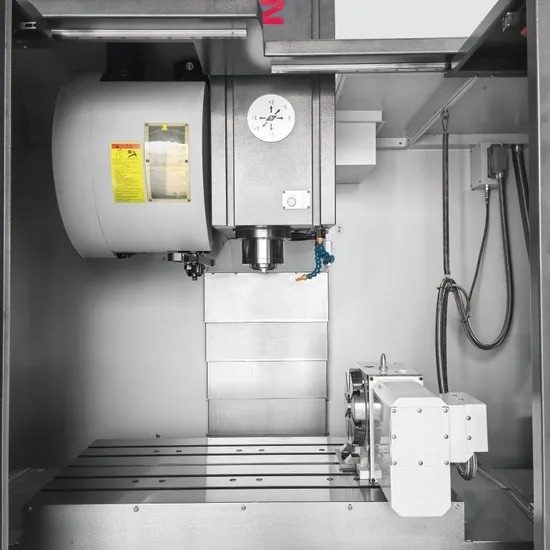

Фрезерные станки
Для обработки корпусных деталей, плит и деталей сложной формы
Что такое фрезерный станок
На фрезерном станке вращающийся многолезвийный инструмент (фреза) снимает материал с заготовки, закреплённой на столе (стол может перемещаться и поворачиваться). Так обрабатывают плоскости, пазы, карманы, отверстия и сложные поверхности корпусов, пресс-форм, штампов, плит и деталей машин.
Какие операции выполняют
- Торцевое и контурное фрезерование
- Пазы и карманы
- Сверление, зенкерование, развёртывание, растачивание
- Нарезание резьбы
- Обработка сложных объёмных (3D) поверхностей
Основные типы фрезерных станков
- Универсальные консольные с ручным управлением подходят для единичных работ и ремонта.
- Вертикальные обрабатывающие центры с ЧПУ: шпиндель расположен вертикально, это самый распространённый вариант для плит и корпусных деталей.
- Горизонтальные обрабатывающие центры: горизонтальный шпиндель, хорошее удаление стружки, часто работают с поворотным столом и палетами для серийных корпусов.
- Портальные станки применяют для крупных деталей, плит и пресс-форм.
- Пятиосевые станки обрабатывают сложные поверхности и позволяют работать с нескольких сторон за одну установку.
- Фрезерно-гравировальные станки используют для лёгких материалов, цветных металлов, пластиков и гравировки.
Как выбрать фрезерный станок
- Рабочая зона. Ход по осям X, Y, Z и размер стола под ваши самые большие детали.
- Нагрузка на стол. Масса заготовки и оснастки.
- Шпиндель. Тип конуса (например, BT, HSK, ISO), мощность и частота вращения зависят от обрабатываемых материалов.
- Инструментальный магазин. Ёмкость и скорость смены инструмента влияют на время обработки.
- Число осей. Три, четыре или пять осей: от этого зависит сложность деталей и число установок.
- Система ЧПУ и программное обеспечение. Удобство программирования, связь с CAM-системой, обучение и поддержка.
- Точность и жёсткость. Требования к допускам и качеству поверхности.
- Охлаждение и стружка. СОЖ, подача охлаждения через шпиндель, удаление стружки.
- Площадка и сервис. Размеры станка, фундамент, электропитание, пусконаладка и обучение персонала.
Расскажите, какие детали вы обрабатываете, и мы подберём станок под ваши материалы, размеры и объёмы. Подробнее о наших услугах на странице «Сервис и обслуживание». Критерии выбора разобраны в статье «Как выбрать фрезерный станок и обрабатывающий центр».
Станки BLIN
BLIN (Ningbo Blin Machinery Co., Ltd.) это китайский производитель металлорежущих станков. В его линейке фрезерные станки и обрабатывающие центры с ЧПУ, а также токарные станки и другое оборудование для металлообработки.
Фрезерные станки и обрабатывающие центры BLIN подходят для обработки корпусных деталей, плит и деталей сложной формы: от единичных заказов до серийного производства.
Мы подберём модель под ваши детали, материалы и объёмы, организуем поставку, пусконаладку, обучение персонала и сервисное обслуживание.
Модели BLIN
Выберите станок под ваши детали и объёмы

BL-V7
Вертикальный обрабатывающий центр: стол 900 × 400 мм, шпиндель BT40, магазин на 16 инструментов.
Подробнее и характеристики
BL-V8 и BL-V11
Вертикальные обрабатывающие центры: столы 1000 × 550 и 1200 × 600 мм, магазин на 24 инструмента.
Подробнее и характеристикиНе нашли нужный станок?
Напишите или позвоните нам: подберем оборудование под вашу задачу и организуем поставку.